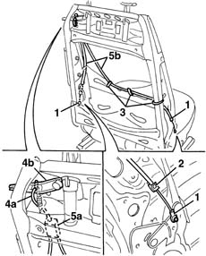

7045L30 Backrest folding control CABLE/ROD - R.R.
- Path
- Procedures > 70 FITTINGS > 7045 FRONT SEATS > 7045L MANUAL MOVEMENT OF ELECTRIC FRONT SEATS > 7045L30 Backrest folding control CABLE/ROD - R.R.
- Kind
- repair procedure (removal / refitting; the operation number is the code)
- Applies to
- all engines; all production periods
- Interactive page
- https://sloeber94.github.io/elrnDB-lYpsln/en/#/2429639
Applies to: all engines; all production periods
 Removing
Removing
 Refitting
Refitting7045A44 seat interior guard - r r
7045A56 LEVER controlling DRIVER'S seat height adjustment device - R.R .
7045A43 seat exterior guard - r r
7045B10 l/h or r/h front seat head restraint - r+r
7045A48 LEVER and TRIM for folding backrest - R.R.
7045D30 Front seat BACKREST COVER, left or right - R.R. (without separating the cover from the upholstery)
1. Working on both sides of the backrest, cut the rivets connecting the ends of the cables.
2. Release the cable outer casing fastening clips.
3. Cut the cable retaining bands.
4. Disconnect the end of the cable (4a) from the control lever (4b).
5. Release the end (5a) of the frame and remove the cable assembly (5b).

Applies to: all engines; all production periods
Refitting
RemovingCheck that the cable assembly is not damaged.
Position the cable assembly and connect the terminals.
Position the bands and attach the outer casing fastening clips.
Fit the rivets.
7045D30 Front seat BACKREST COVER, left or right - R.R.
7045A48 LEVER and TRIM for folding backrest - R.R.
7045B10 l/h or r/h front seat head restraint - r+r
7045A43 seat exterior guard - r r
7045A56 LEVER controlling DRIVER'S seat height adjustment device - R.R .
Topics linked from this page (7)
- 7045A24 squab knob - r r
- 7045A43 seat exterior guard - r r
- 7045A44 seat interior guard - r r
- 7045A48 LEVER and TRIM for folding backrest - R.R.
- 7045A56 LEVER controlling DRIVER'S seat height adjustment device - R.R .
- 7045B10 l/h or r/h front seat head restraint - r+r
- 7045D30 Front seat BACKREST COVER, left or right - R.R.